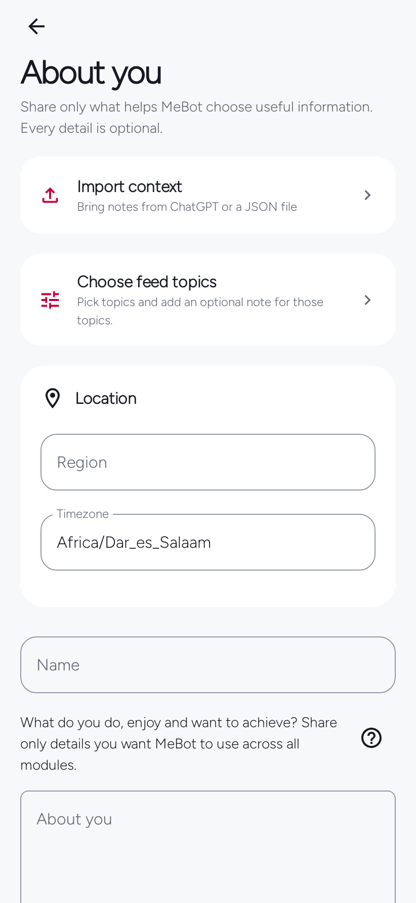
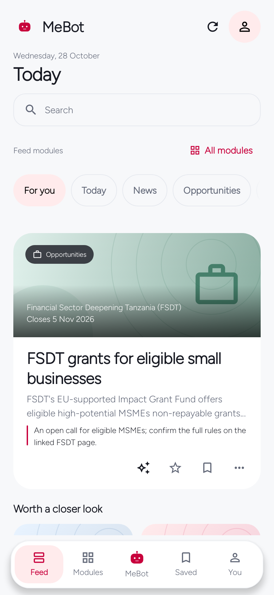
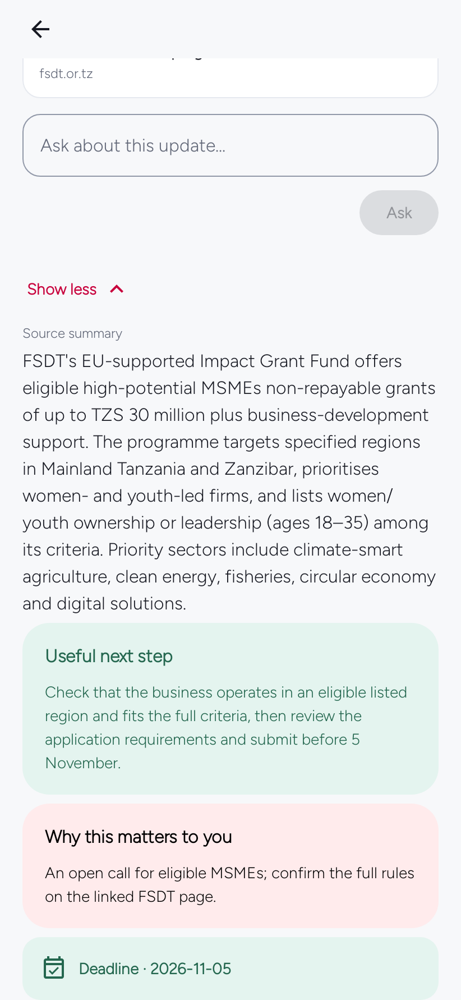
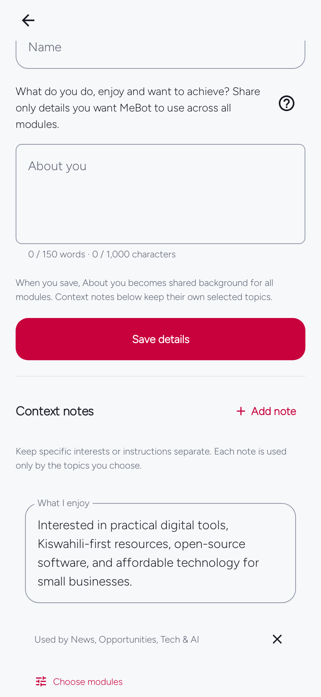
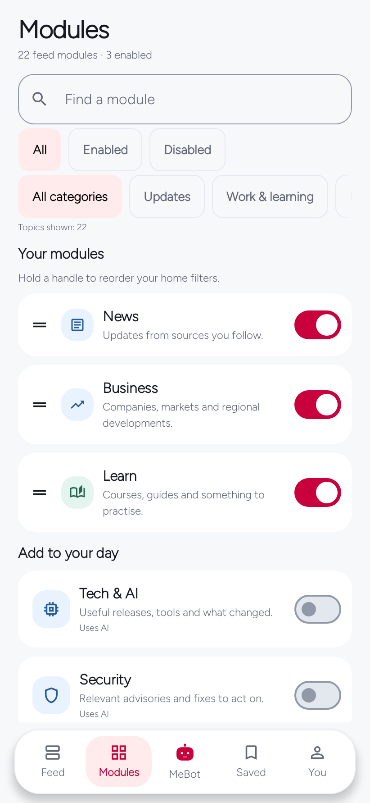
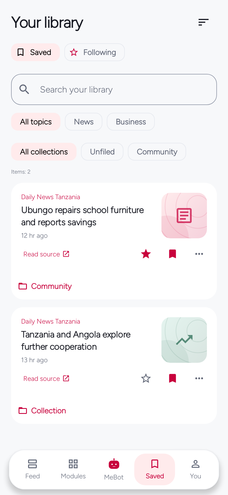
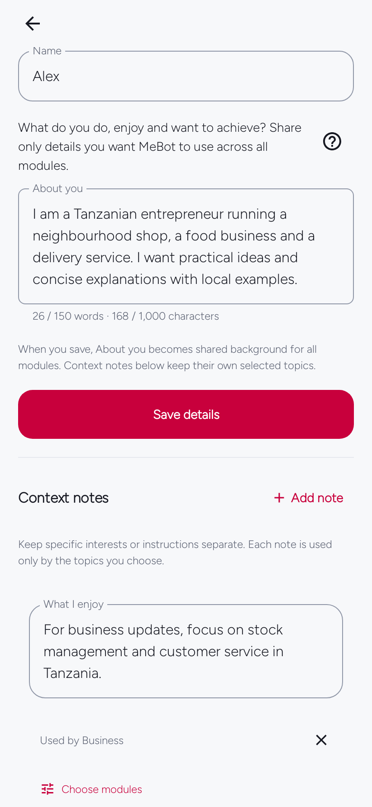
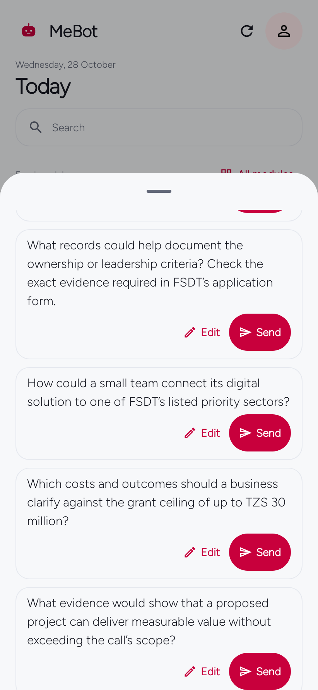
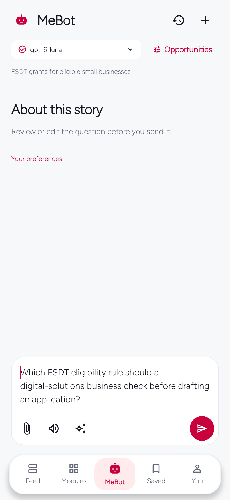
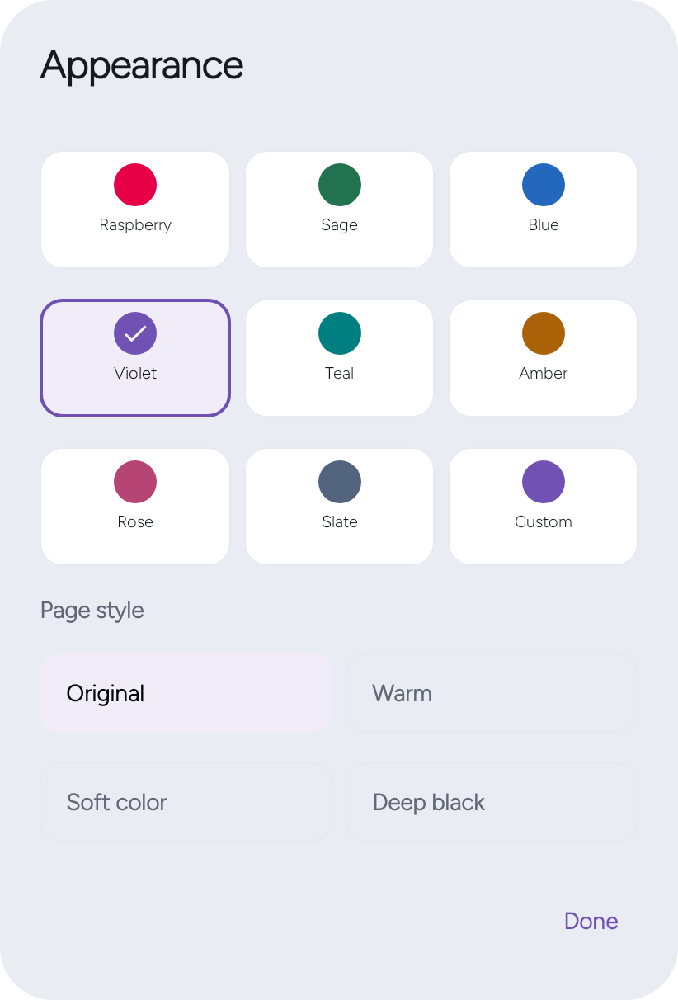

Android · English · Kiswahili
Personal reading, dated opportunities, and everyday tools.
Read a personal selection or a longer AI-authored Original Read. Check opportunity dates at their official sources, and set your interests in About You.
Download the latest public Android release.
Screen images are examples. Any AI response shown uses sample content, not a live account result.



For You · Original Read
Stories selected for your interests.
For You collects sourced stories around topics you choose. Original Read is a separate, longer AI-authored piece with its Created date—not a publisher date. Optional further reading is separate from the reflection and does not verify it by itself.


Grants · jobs · contracts · scholarships
Check dates and deadlines at the source.
Browse source-checked grants, jobs, contracts and scholarships. Publication dates and application deadlines appear separately when available. Confirm current eligibility, dates and requirements on the official listing.



About You
Choose what personal context to use.
Set interests and region under About You. Review which notes each module may use, change those choices, or leave personal context empty.


Modules · Saved · settings
Find the screens you need.
These earlier native captures show additional navigation, connection, library, notes, and update screens. Layouts and labels may have moved; the complete manual follows the current controls.









Story questions
Ask your selected AI about a story.
With an AI provider connected, open the story’s question sheet. Choose Send to ask a question, or Edit to change the draft first. Opening the sheet alone sends nothing.
Example questions for FSDT grants for eligible small businesses. Suggestions depend on that story and the AI connection you choose.
- Which FSDT eligibility rule should a digital-solutions business check before drafting an application?
- What records could help document the ownership or leadership criteria? Check the exact evidence required in FSDT’s application form.
- How could a small team connect its digital solution to one of FSDT’s listed priority sectors?
- Which costs and outcomes should a business clarify against the grant ceiling of up to TZS 30 million?
- What evidence would show that a proposed project can deliver measurable value without exceeding the call’s scope?





Language · theme · colour
Set your language, colour, and page style.
Choose English or Kiswahili under You → Personalization → Language. In Appearance, select system, light or dark mode, an accent colour, and one of four page styles.
Chagua Kiswahili au English chini ya Wewe → Binafsisha → Lugha. Kwenye Mwonekano, chagua mandhari ya mfumo, mwanga au giza, rangi kuu na mtindo wa kurasa.



Alarms, check-ins, and Focus
Save a story, set an alarm, record a Daily Check-in, or start a Focus session. These local tools work without connecting an AI provider.